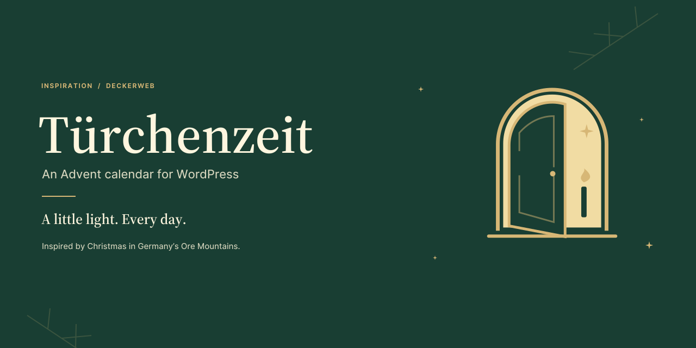
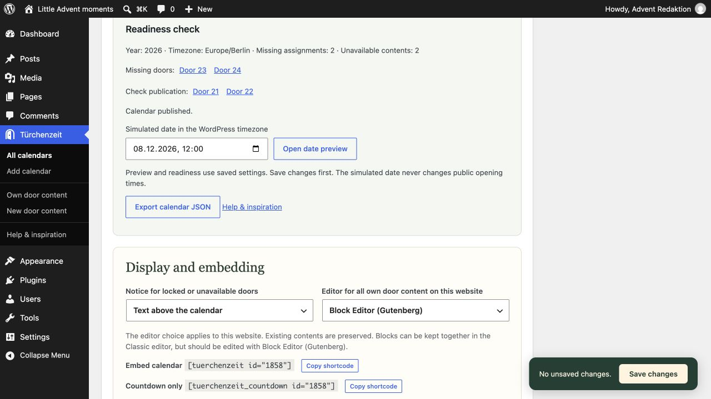
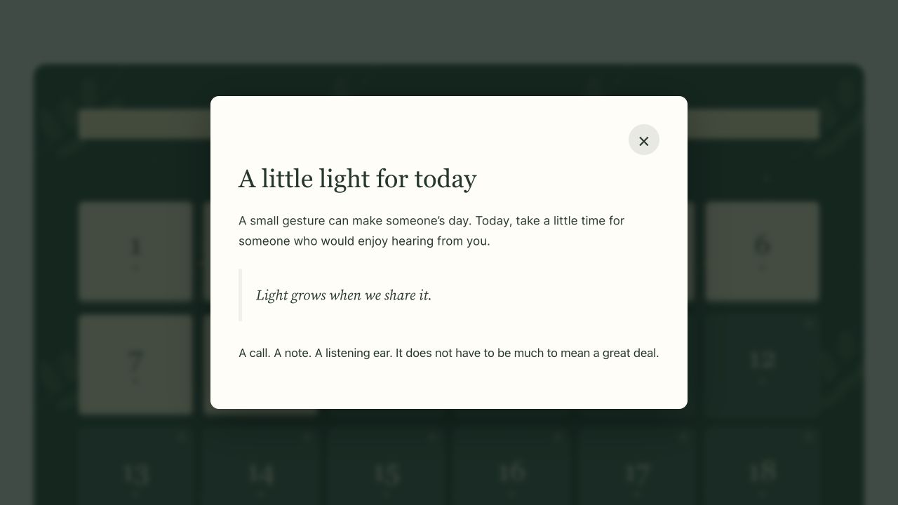
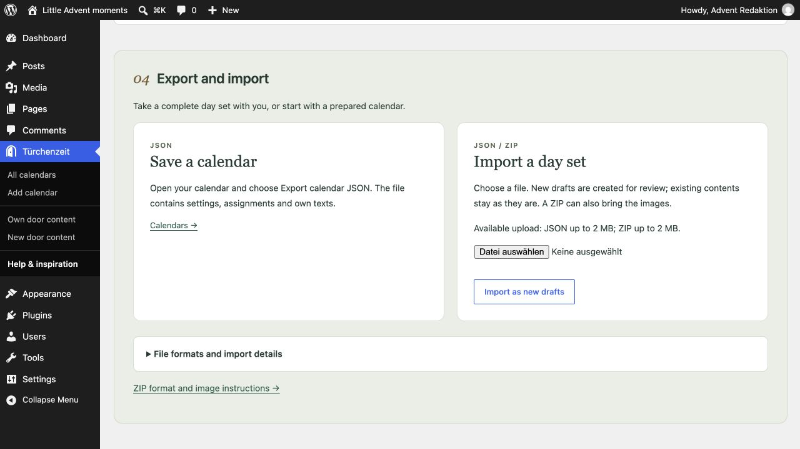
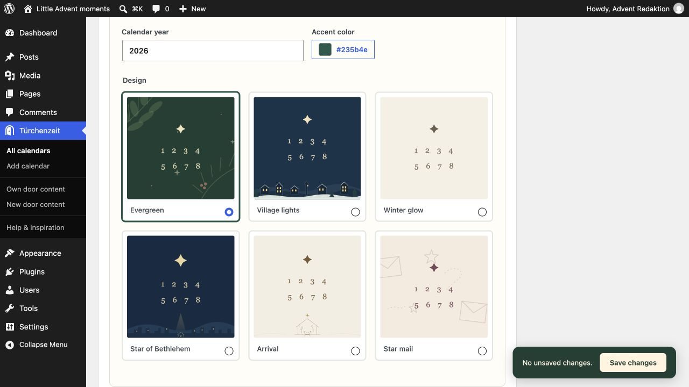
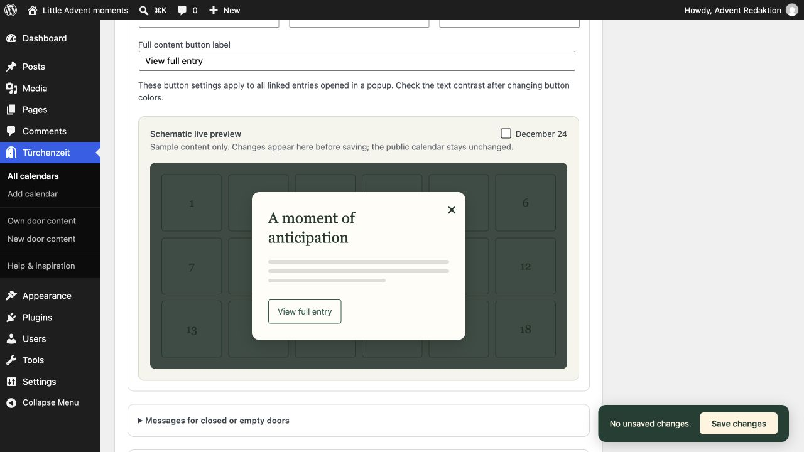

Türchenzeit
Türchenzeit brings 24 little moments of Advent to your WordPress website. Combine dedicated daily content with existing posts or pages, choose a design, and let a new door open each day. You can also create a fully editable Advent landing page, ready to return with fresh content each year. The German name evokes the season of opening little Advent calendar doors. Part of the Inspiration series, Türchenzeit draws on the Christmas warmth of Germany’s Ore Mountains.
What Türchenzeit stands for
Türchenzeit makes room for anticipation, with content that brings joy, invites reflection, and speaks to the heart and soul. Its design is intentionally warm and understated. Kitsch is outside its scope, as is Halloween; a purely wintry or snowy backdrop is not the idea behind the plugin either. Its home is the Advent and Christmas season.
Of course, a door can also reveal a voucher, an offer, or a product idea. Türchenzeit is not, however, a marketing plugin built around driving sales or grabbing attention. It provides a thoughtfully designed tool; the personal touch comes from what you share. A good Advent calendar does not need flashy effects. It needs something people can look forward to each day.
At a glance
- Your own Advent website – an editable landing page with optional header and footer patterns.
- 24 doors, your contents – combine your own daily contents with existing posts or pages.
- Six designs with character – custom accent colors and adjustable popups.
- A new moment every day – scheduled openings and an optional December countdown.
- Design once, use every year – prepare new annual editions at the existing address.
- Prepare with confidence – door grid, readiness check and private date preview.
- Import complete day sets – JSON/ZIP import including images.
Getting started
- Upload the plugin ZIP under Plugins → Add Plugin → Upload Plugin, then activate it.
- Under Türchenzeit → New door content, create your contents. The block editor (Gutenberg) is the default when no editor preference has been set. Choose Classic in a calendar’s settings if you prefer; a saved choice applies to this website.
- Under Türchenzeit → Add calendar, set the title, year, design, and optional countdown text.
- Choose a door card and search for a title. Click a result directly below the search field, or create and assign your own draft. Publish your own contents when ready; linked entries must already be published. Save the calendar.
- Publish the calendar. Use its shortcode, or click Prepare landing page. The new page starts as a draft with native blocks. Adjust your text, logo, contact and legal links, then publish it.
Tips for your Advent website
The prepared landing page is a normal WordPress page. You can edit it in the block editor (Gutenberg) and set it as your website’s static homepage under Settings → Reading.
A small Advent website often needs only this one page, plus your legal and privacy information. If you create your daily contents under Own door content, you do not need additional blog posts or content pages. This keeps your website lean and easy to manage.
Headers and footers are optional. The included patterns give you a ready-made starting point for your own colors, text, and logo. You can also add navigation to the header, for example to further information or contact details.
One network, many Advent websites
Network activation lets you run independent Advent websites for different topics: recipes, music, reflections, or a local community project. Each website keeps its own calendars, contents, landing pages, settings, and WordPress timezone. Türchenzeit is also available on websites added later. Authorized administrators configure each website separately; network activation creates no pages or calendars automatically.
FAQ
How do I embed a calendar?
Use [tuerchenzeit id="123"], replacing 123 with the calendar ID shown in the editor. [adventskalender id="123"] is an alias. JavaScript is required for opening doors and showing the countdown.
Can I place the countdown separately?
Use [tuerchenzeit_countdown id="123"]. Add countdown="0" to the calendar shortcode to hide its own countdown. The countdown ends on December 1 at 00:00 in the calendar year and WordPress timezone.
How do I preview future doors?
Readiness lists missing assignments, unavailable contents, year and timezone. A saved calendar offers a private date simulation in the WordPress timezone, restricted to authorized administrators. Public opening times never change. Alternatively, [tuerchenzeit id="123" preview="1"] opens all assigned contents including own drafts.

Readiness distinguishes missing assignments from unpublished content and provides the private date preview.Are future contents private?
Own door content is excluded from the standard WordPress search and has no public single-entry page. Visitors see it through an opened calendar door; REST access is restricted to administrators. Linked posts and pages normally remain publicly accessible and searchable. The opt-in setting protects originals assigned to published calendars until opening, including direct URLs, the standard WordPress search and other standard access paths. The earliest opening across all protecting calendars wins; drafts lock nothing. Removing the last protecting assignment removes the lock. Purge caches and exclude original URLs from page caching when enabling protection. Protection requires the plugin to stay active and does not cover public media files or external copies.
What happens after Christmas or if content disappears?
Opened doors stay accessible. An optional editable greeting appears from December 25 onward. The today button appears only December 1–24 in the calendar year. Deleted, private, password-protected and unpublished linked originals are unavailable. Visited markers are optional and saved locally only after enabling them on that browser.
What content and data are supported?
Choose Classic or Block Editor (Gutenberg) for your own contents. Standard text, image, gallery, column and video blocks are rendered in the dialog. YouTube URLs on their own paragraph and YouTube Embed blocks become click-to-load players. Arbitrary third-party iframes are not permitted. Linked previews show an excerpt and link. Deactivation and uninstallation preserve calendars, contents, pages, editor preference and assignments. Daily Scripture supports fixed local passages via its Bible Passage block and [daily_scripture_passage ...], when the plugin and desired Bible edition are set up. Other shortcodes are not executed.

Own door content in the private December 8 date preview; public opening times stay unchanged.How do I prepare the next year without changing the live website?
Use Prepare next year in the saved calendar. It creates a new calendar draft with the next year and independent drafts of its own contents; linked entries are reused. Publish the new contents and calendar when ready. In the original calendar, set the switch time in the WordPress timezone (default: November 1 of the next year). The original shortcode and landing-page URL then display the new published edition. Drafts never replace the live calendar; an empty switch date disables switching. Under Popup and button appearance, change colors, overlay opacity, button label, outline/fill and corners. Empty color fields inherit the design. Messages for closed or empty doors provides separate texts with {tuerchen}, {tag}, {datum} and {uhrzeit}; paragraphs, bold and italic are supported. In the page editor, find optional sections under Patterns → Türchenzeit and replace the existing header or footer. Set the outer group to Full width; the original landing layout stays the default.
How do I transfer a calendar?
Export JSON from the calendar editor (2 MB maximum). Under Help & inspiration, import JSON or a ZIP (20 MB maximum) containing calendar.json and raster images in media/. ZIP images enter the media library; matching content URLs, featured images and door images are remapped. New calendar and content drafts are created. Local original URLs are remapped; unresolved references stay empty. Other embedded URLs remain unchanged. Original protection starts off; annual-edition links are not imported. ZIP needs the PHP ZIP extension. SVG is not supported.

Export saves JSON. Import creates new drafts; this example shows the actual upload limit of the test environment.How do I style my doors?
Patterns → Türchenzeit includes daily reflection, verse and reflection, video and picture stories plus optional headers and footers. The extra palette preserves theme colors and adds design/accent colors. Door pictures appear only after opening. Mixed number positions remain stable; animations are optional and respect reduced motion.

Design choices with year and accent color; Evergreen is selected.What should I check with caches?
Do not cache calendar requests to admin-ajax.php. When enabling original protection, purge page/CDN/REST caches and exclude original URLs from full-page caching. Responses served before WordPress runs, third-party indexes and public media need separate protection. This is not a compatibility claim for any specific cache/CDN vendor.
Privacy and connections
Frontend calendar requests go only to your own WordPress website. No telemetry or remote fonts. YouTube players contact youtube-nocookie.com only after the visitor clicks Load YouTube video; no remote preview thumbnail is loaded. YouTube still receives visitor connection data after loading. Block Editor (Gutenberg)’s editor can use WordPress’s provider previews while editing. The bundled deckerweb Library provides an optional plugin catalog, initially offline. The deckerweb Updater checks GitHub releases through WordPress’s update workflow. Other media retain their original hosts. Visited markers optionally use localStorage only after the visitor enables them. Only door numbers scoped to website, calendar and year are stored; nothing is transmitted. Disabling removes the saved state; a separate button clears markers. Daily Scripture is optional; Türchenzeit does not download its Bible texts.
Shortcodes: popup or full page?
In a calendar popup
Own door contents and calendar popups do not execute general shortcodes. Daily Scripture is a supported exception: its fixed Bible passage shortcode can show one verse or a longer passage when the plugin and Bible edition are available.
On the full entry page
For other shortcodes, assign a post, page or suitable public content type and select Go to entry. The full page uses the normal WordPress output, provided the relevant plugin and template support those shortcodes. Choosing another content type alone does not change the popup rules.
The popup is intended for manageable daily contents. Other shortcodes may require complete layouts, forms, scripts or styles that cannot generally be guaranteed in a popup loaded after the page. Daily Scripture is a deliberately integrated exception.
The warmth behind Türchenzeit
Türchenzeit is a personal project by David Decker, who comes from the Erzgebirge, or Ore Mountains, in southeastern Germany. The region has a rich tradition of Christmas woodcraft: carved figures, wooden Christmas pyramids, and Schwibbögen, the candle arches that light up windows during the festive season. That sense of light, craftsmanship, and welcome is the inspiration behind the plugin’s atmosphere.
What does “Türchenzeit” mean?
It is a German name combining Türchen, a little door, with Zeit, meaning time or season. It evokes the familiar ritual of opening a little Advent calendar door each day. We keep the German name in English, too. The calendar runs from December 1 to 24, with room for whatever you would like to share behind each door.
What are the Ore Mountains?
The Erzgebirge, known in English as the Ore Mountains, is a mountain region along the German–Czech border. David comes from the German side, where Christmas woodcraft and illuminated window decorations are deeply rooted traditions. You do not need to know the region to enjoy the plugin; it is the source of its warm, unhurried Advent atmosphere.
Can I create a Christian Advent calendar?
Yes. Advent means arrival. For Christians, it is a season of expectation and preparation for Christmas, the celebration of the birth of Jesus Christ, the Savior. The Star of Bethlehem and Arrival designs reflect that meaning. Share Bible passages, reflections, or daily devotions, or choose another design for a calendar with a theme of your own.
Does my calendar have to look like a German Christmas scene?
No. The regional inspiration shapes the warmth of the included designs. Your content, colors, and page patterns are yours to change. Add the calendar to your current website or give it an Advent landing page of its own.
The Daily Scripture button opens the deckerweb Library catalog when the plugin is not installed. If it is installed but inactive, the button offers WordPress activation. Once active, it opens the Daily Scripture admin area. Available actions depend on your permissions; nothing is installed automatically.
Source Serif 4 / Inter · SIL Open Font License 1.1 · Source Serif 4 · Inter
Multisite
Can I activate Türchenzeit across a multisite network?
Yes. Network activation makes Türchenzeit available on every website in the network, including websites added later. Each website keeps its own calendars, daily contents, landing pages, editor preference, and WordPress timezone. Authorized administrators configure them in that website’s dashboard. Network activation does not create any calendars or pages automatically. This makes it possible to run separate Advent websites for different topics.
Optional local fonts
In your own door contents and standalone Advent landing pages, select a text block and open Typography → Font (font family). Choose Türchenzeit · Source Serif 4 or Türchenzeit · Inter. If the control is hidden, enable Font from the Typography options menu. Choose Default to return to the inherited theme font.
The two fonts are optional and supplied locally under the SIL Open Font License. No Font Library installation or external font service is needed. Theme typography stays unchanged until you choose a font. Browsers download font files only for text that uses them. Plugin font choices require Türchenzeit to remain active.
Ten content patterns offer editable starting points: reflection, verse, video, picture story, Grandma’s recipe book, a small act of kindness, an Advent letter, a song, creative December hours, and evening prayer or blessing. All use standard WordPress blocks. Replace sample text and empty media blocks before publishing.
Can I preview popup colors before saving?
Yes. Popup and button appearance includes a schematic live preview with sample content. It shows styling changes before saving and offers a December 24 view. Public calendar settings change only when saved.

The schematic preview shows sample content and the button; saving applies settings to the calendar.